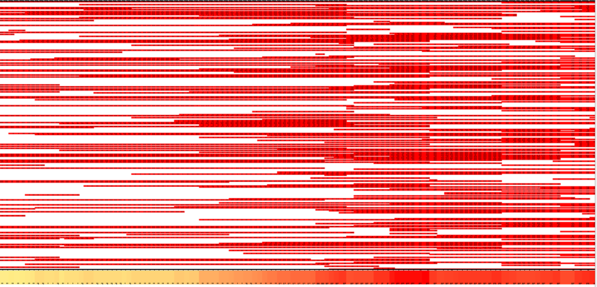

On Halloween of 2013, the FDA released another strategic plan to combat drug shortages. Will it work? You have no way to find out, because you can't go check drug shortage trends for yourself beyond today's current shortages listed on the FDA site. Unless you're a data journalist, that probably doesn't scare you - but it should. Without a publicly accessible database, interpreting shortages and evaluating actions to prevent them is a free-for-all with lives at stake. Aside from the FDA, who presumably has all the data filed somewhere (and possibly University of Utah) people are left guessing at how effective countermeasures are, what broader trends are at play, and what drugs are likely to go.
Wayback Machine takes a "snapshot" of publicly accessible web pages on a regular basis, and it has archived the drug shortage notifications on the FDA's page since 2009. The archived pages have been created from two to several times each month. Last semester I used the archived lists of drug shortages as my data source to create a Microsoft Excel document charting each of the drug shortages over time. I pulled each of the HTML files with the list of drug shortages, so for each date in the archive I was able to get a list of all drugs.
Portion of my drug shortage data from last year - fun looking, but hard to use.
Each row is a drug, and the reddened columns are the dates where it was listed as having a shortage.
Using the same dataset, the archived copies of the FDA's drug shortage site since 2009, I plan to extract a much more useful database of information that will include the drug type, companies who reported each shortage, and reasons given for the shortage. This information is all on the FDA's site for a given day, but is hard to access - the HTML isn't regularly organized, so I will have to figure out clever ways to extract it (such as more advanced regular expressions wizardry). In addition, I will have to learn a databasing format more versatile than Excel to associate each drug with the dates, companies reporting the shortage, and reason. I will also have to learn good error-checking methods to make sure my data is accurate, because doing it by hand (as I did with my original, smaller dataset) will be infeasible.
Journalistically, I will look at specific FDA policies and compare the shortages and types of shortages before they took effect to those after, revealing whether the policies worked as expected. I will examine the types of shortages that happen at particular times - for instance, when particular types of drugs have shortages at particular times of year - and see if I can draw conclusions, and I will look at the companies announcing each shortage and see whether there are any patterns to be found there. However, even if no patterns emerge I will still be able to answer the question of whether particular policies worked, and how long it took after their implementation.
Finally, I'll try and figure out a way to display the drug shortage data in an engaging and interactive way, possibly with an online data visualization program. If that is not possible, I will at least be able to pull together graphs of the different types of drug shortages and when they were most prevalent. In the end, I will provide an interesting dataset and several concrete conclusions that can be made only with its help. Any interesting patterns that come up will be a bonus, and will make for an even better analytical piece.
A story like this would work well somewhere like ProPublica, and I'd also like to make the database publicly available so people can answer their own questions about drug shortages. I could talk to current policymakers and ask their reactions to whether their shortage strategies are working. My previous professor, Charles Seife, would be a good source for explaining the usefulness of this data - and could likely suggest others to comment on what it uncovers.
Home